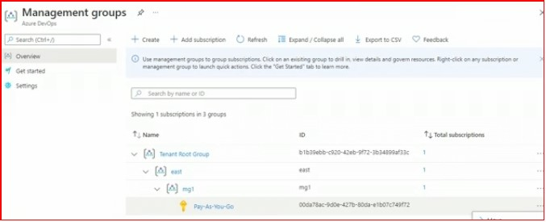

Azure management hierarch
Management Group
- Organize multiple subscriptions in a hierarchy
- Facilitate the application of Azure Policy and Role Based Access Control
- Tenant root group is default group
- Nested management group are supported

- Subscriptions are tied to a tenant, AZ AD tenant
Resource Group
- organize related resources in a group
- helps application of Azure Policies and RBAC
- manage identity and access management
- track cost and create budget
- Resource Group can be created using:
- Azure portal
- Azure CLI, Powershell
- ARM templates, Rest API
- Moving resources between Resource Groups
- does not change resource region/location
- resource id changes
- resource loose the RBAC policy of previous RG
- Deleting Resource Group
- deletes all resources in the resource group
Resource Locks
- prevent accidental deletion or modification of resources
- Can be applied at subscription, resource group, individual resource
- The lock overrides any user permissions.